Tres mensajes distintos, cada uno contra una duda de su cliente: miedo a los extras, «¿quién me coordina el chalet?» y «¿cuánto me va a costar?». Hay carruseles, imagen suelta y story de cada uno, y el texto listo para Meta. Todo lleva al formulario de 6 preguntas con descarte que preparó el agente de Al Milímetro.
Las fotos de su web no sirven: son de banco de imágenes (familias en la cocina, un salón con perro) y el 23-oct Sonia avisó de que la agencia anterior puso material que no es suyo. Su Instagram no se pudo descargar desde aquí. Por eso todas las fotos son imágenes de referencia hechas con IA, realistas y sin exagerar, y ningún texto dice «nuestra obra». Se cambian por fotos de sus obras en cuanto las mande, sin tocar el diseño.
| Mensaje | Duda que responde | Piezas | Público | Botón |
|---|---|---|---|---|
| A · Sin extras ocultos | «¿Y si se me dispara el precio o no acaba nunca?» | Carrusel de 5 · story | Todas sus zonas, 35-70 años | Solicitar presupuesto → formulario |
| B · Tu chalet, de principio a fin | «¿Quién me coordina una reforma tan grande?» | Imagen · variante por municipio · carrusel de 4 · story | Boadilla, Majadahonda, Villaviciosa, Torrelodones y Aravaca | Solicitar presupuesto → formulario |
| C · ¿Cuánto cuesta? | «¿Cuánto me va a costar?» | Diseño · carrusel de 3 (4 con las cifras) · story | Todas sus zonas + quien visitó la página y no terminó | Más información → formulario |
Se mide por visitas técnicas y su coste, no por formularios. A las dos semanas se queda el mensaje que traiga más contactos A y B, y se hacen más versiones de ese.
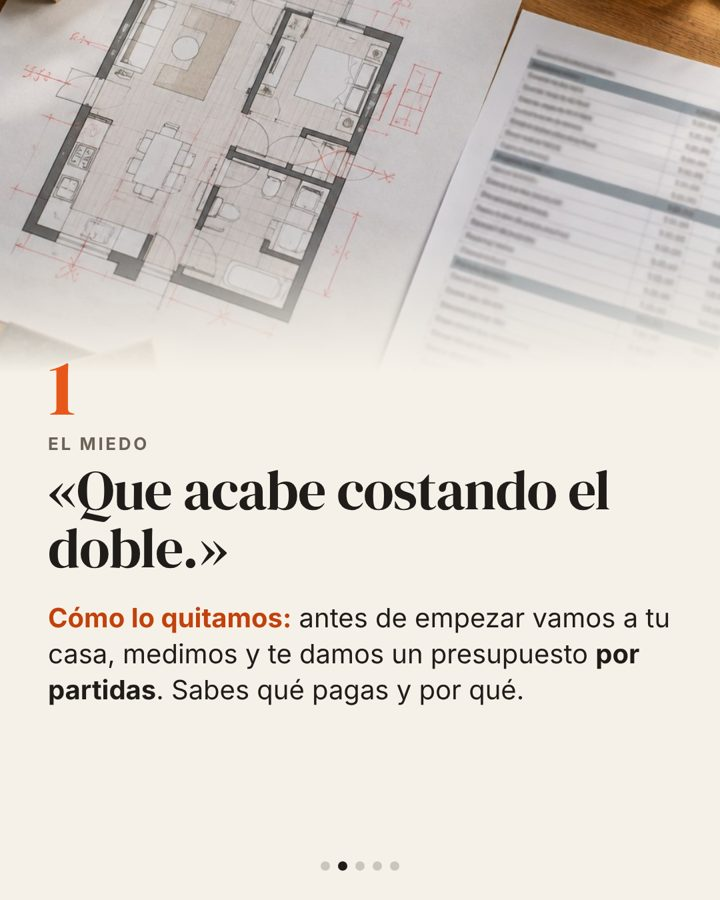
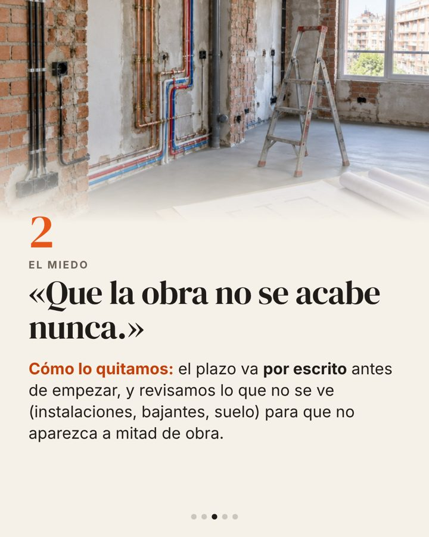
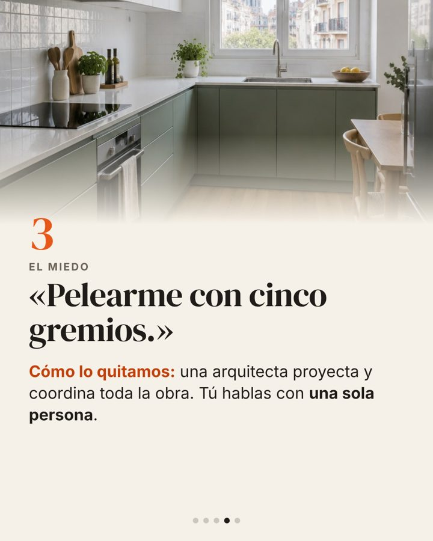
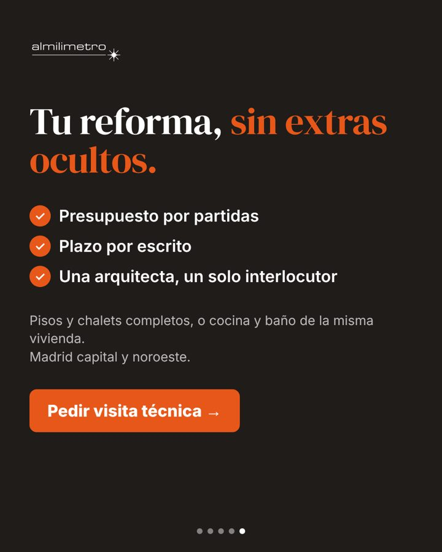
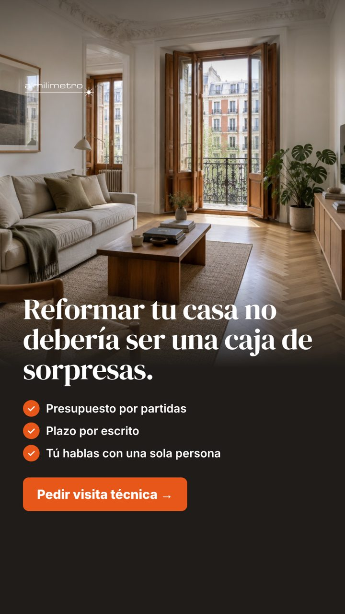
Su cliente ya se ha informado, compara y teme que la obra se dispare. El carrusel nombra los tres miedos con sus palabras y responde a cada uno con algo que Sonia ya hace. No sale ella: la autoridad la pone «una arquitecta».
A confirmar con Sonia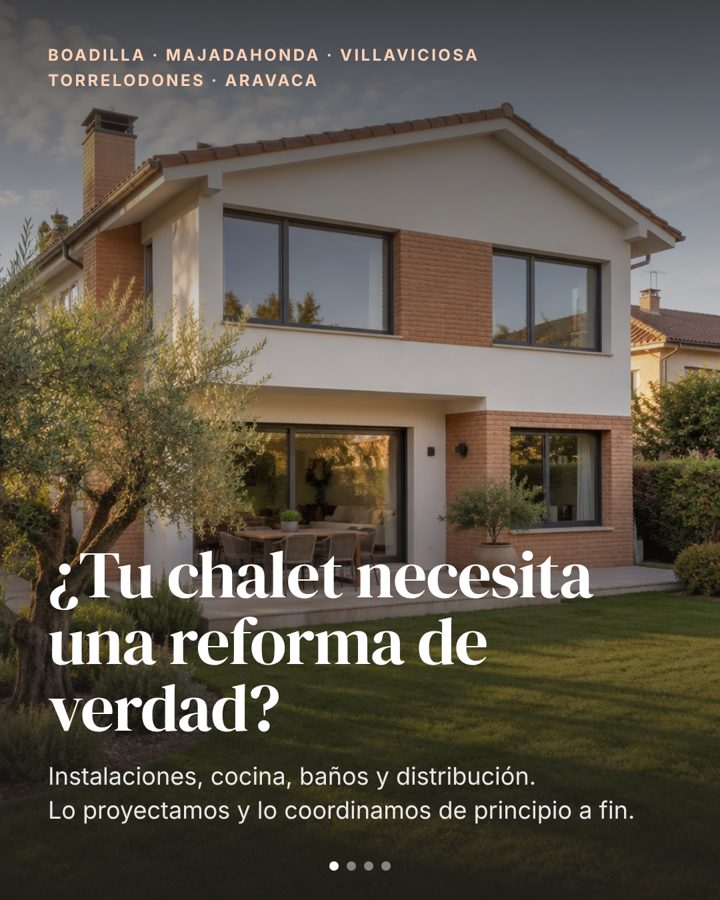
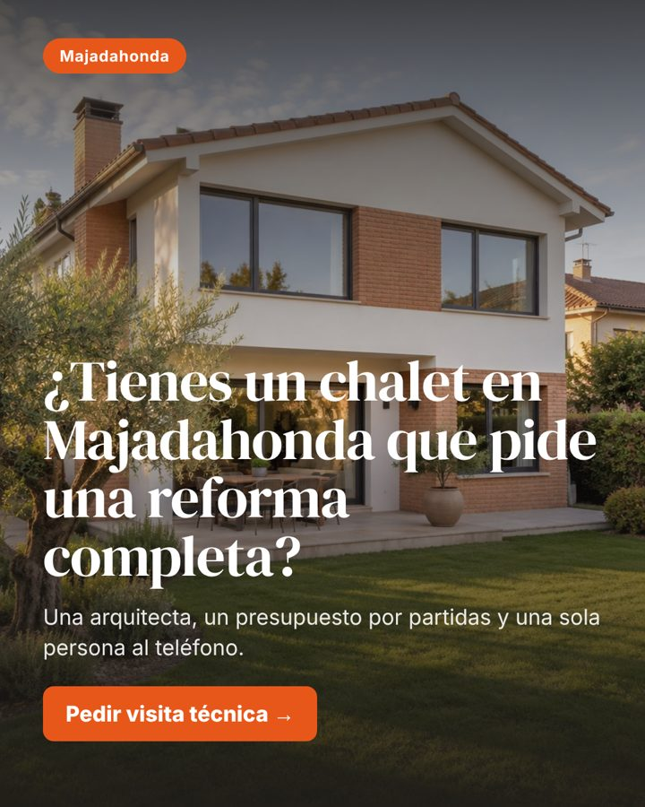
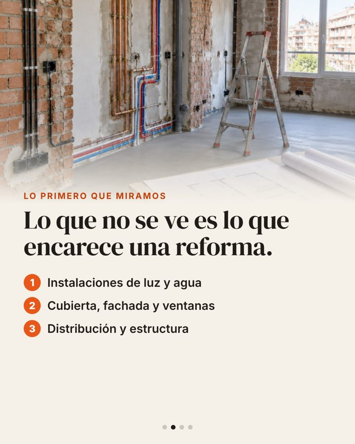
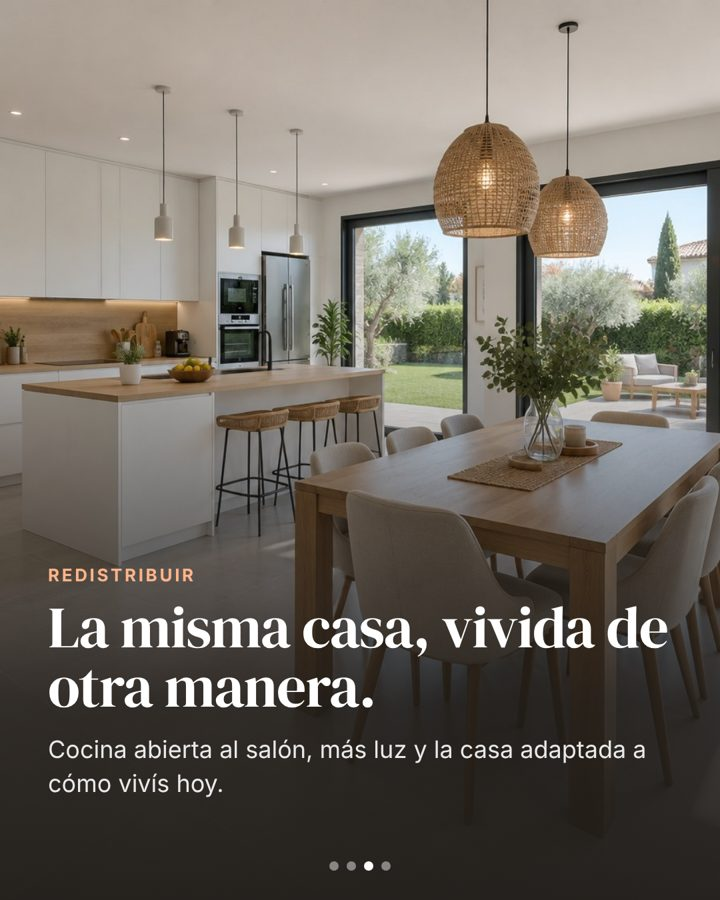
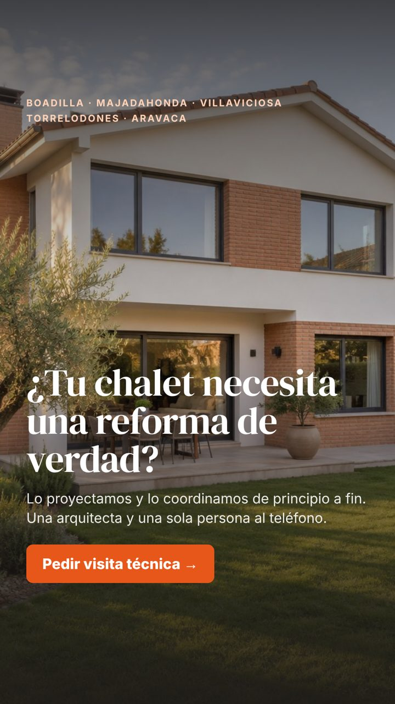
Es su obra prioritaria y la de más importe (chalet integral desde 160.000 €, cifra suya). Nombrar el municipio hace que quien vive allí se pare. La variante por municipio deja ver en dos semanas qué zona trae visitas.
A confirmar con Sonia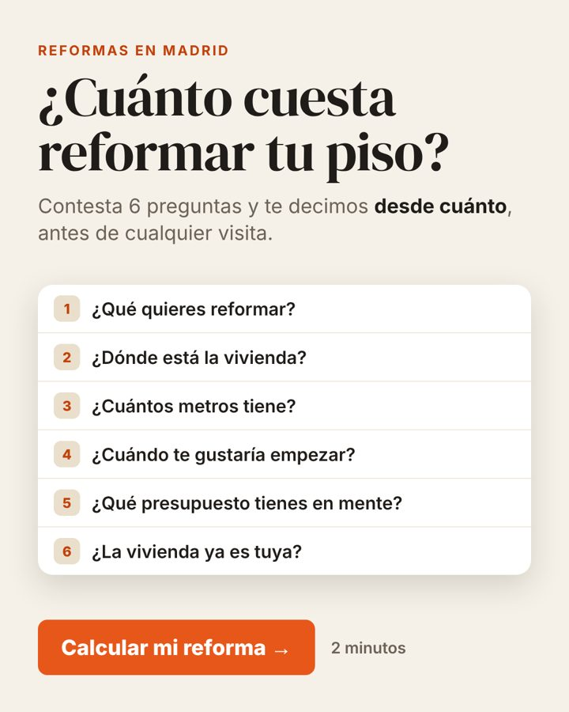
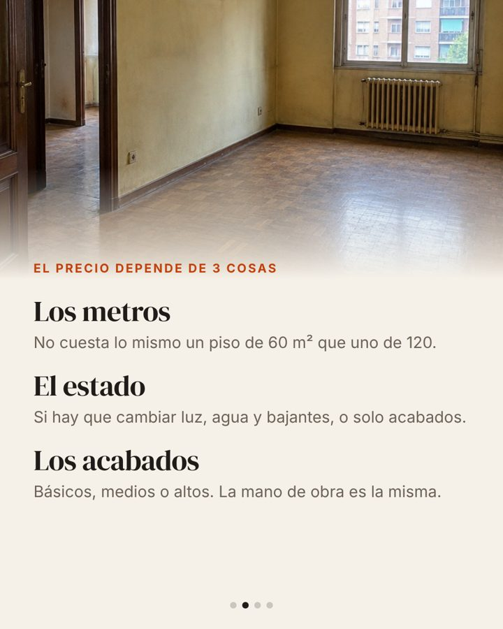
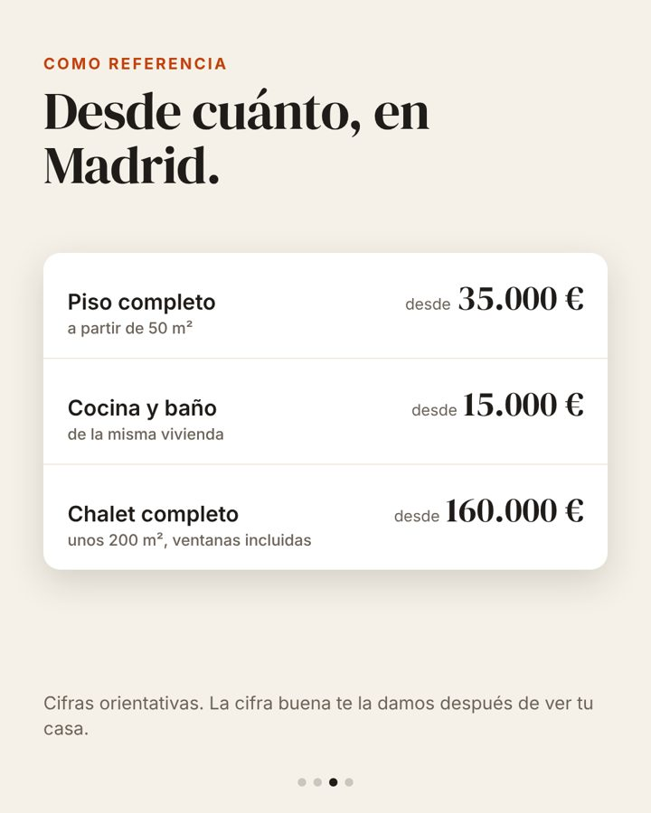
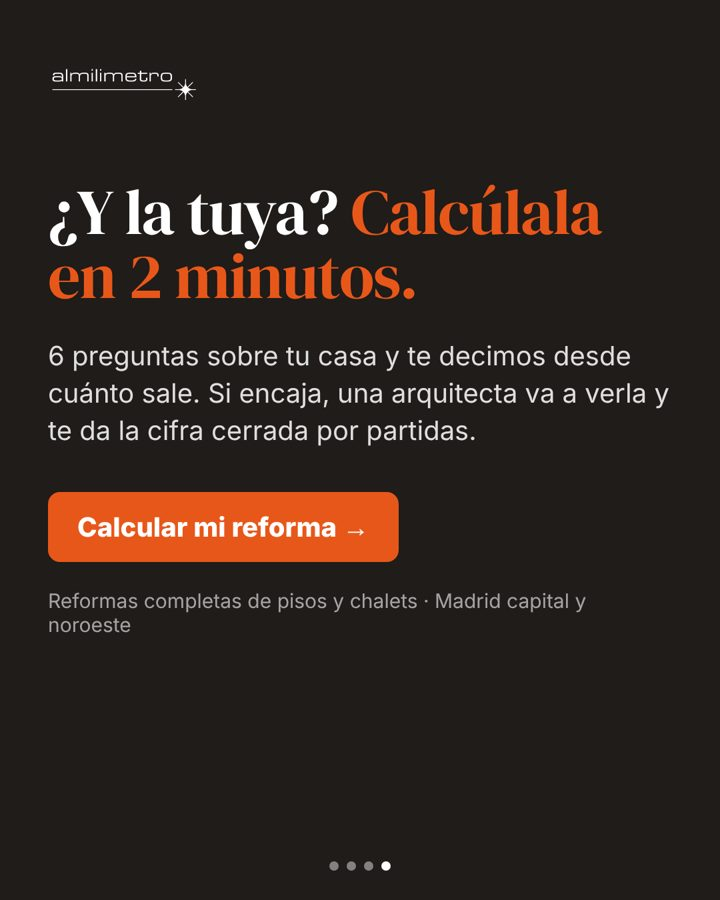
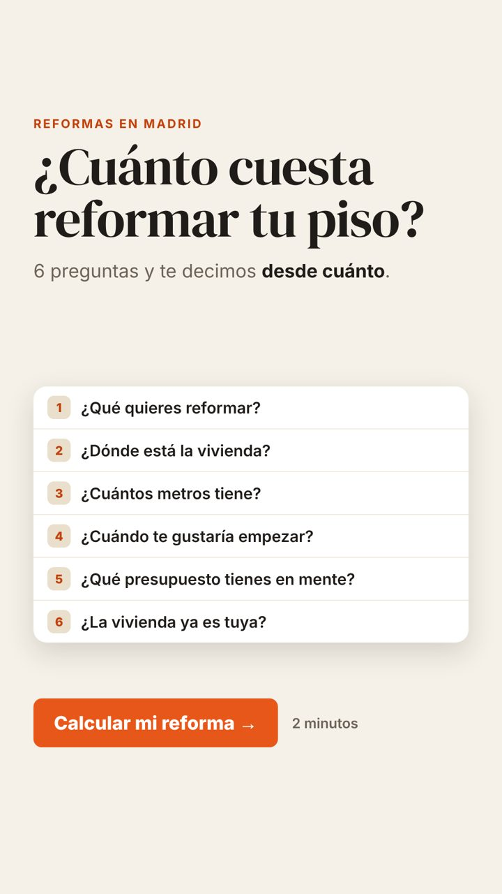
Su cliente ya ha preguntado a Google y a ChatGPT cuánto cuesta. Le damos un «desde» a cambio de las 6 preguntas, y esas preguntas son las que filtran: tipo de obra, zona, metros, cuándo, presupuesto y si la casa es suya. El diseño enseña el formulario tal cual, así nadie se sorprende al abrirlo.
A confirmar con Sonia| Regla del formulario | En los anuncios |
|---|---|
| Mínimo de obra 15.000 €; locales y arreglos sueltos se descartan | Solo se habla de pisos y chalets completos y de cocina y baño de la misma vivienda. Ni locales, ni baños sueltos, ni «pequeñas reformas». |
| El resultado es un «desde», la cifra buena tras la visita | Ningún anuncio promete precio cerrado: «desde cuánto» y «cifra orientativa». |
| 6 preguntas + datos de contacto | La pieza C enseña las mismas 6 preguntas en el mismo orden de temas. |
| Zonas prioritarias y sur excluido (M-30 a M-40) | B nombra solo los municipios del noroeste; A y C dicen «Madrid capital y noroeste». El sur se excluye en el público. |
| Sonia no sale en los anuncios | Ninguna pieza lleva su cara ni su nombre en la imagen. |
| Qué falta | Dónde se nota | Quién |
|---|---|---|
| Fotos de 3 a 5 obras suyas (valen las del móvil y las de obra en marcha) | Las 11 piezas con foto (7 fotos distintas) | Sonia |
| Validar el Excel de horquillas «desde» | C, lámina 3 | Sonia (lo preparamos nosotros) |
| Confirmar «plazo por escrito» | A, láminas 3 y 5, y la story | Sonia |
| Radio de chalets fuera de los 5 municipios | B, texto y público | Sonia |
| Presupuesto de anuncios del primer mes | Cuántos mensajes salen a la vez (con menos de 20 €/día, empezar con 2) | Sonia y Maikel |